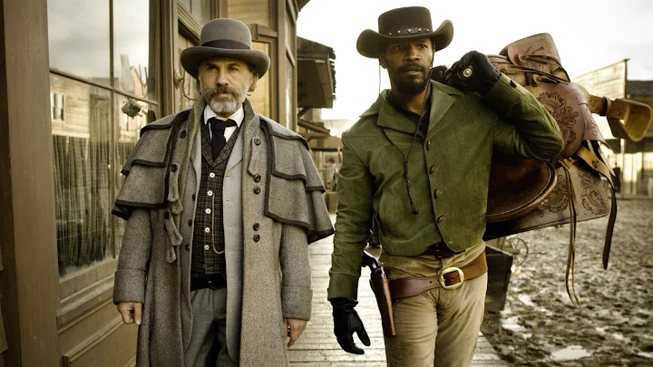

En Texas, dos años antes de estallar la Guerra Civil Americana, King Schultz (Christoph Waltz), un cazarrecompensas alemán que sigue la pista a unos asesinos para cobrar por sus cabezas, le promete al esclavo negro Django (Jamie Foxx) dejarlo en libertad si le ayuda a atraparlos. Él acepta, pues luego quiere ir a buscar a su esposa Broomhilda (Kerry Washington), esclava en una plantación del terrateniente Calvin Candie (Leonardo DiCaprio).
